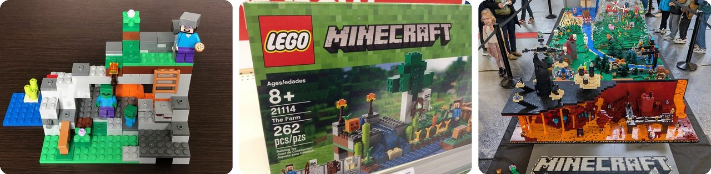
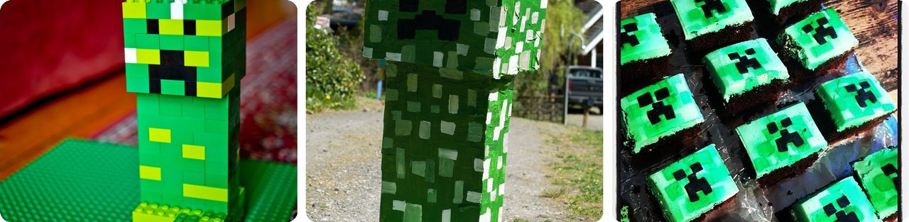
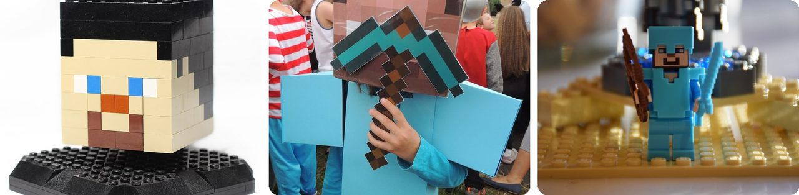
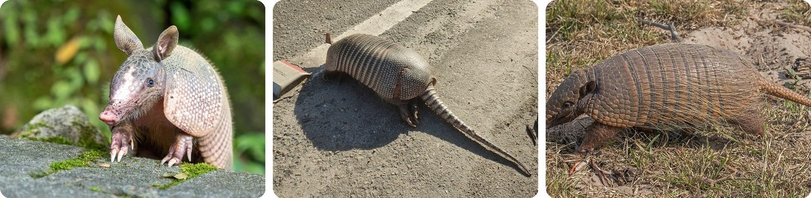

🌍 Top 10 Sets, mobs et figurines LEGO Minecraft
21 novembre 2026
1. 🗳️ Les fans ont fait naître LEGO Minecraft en 2 jours
 Mojang, le studio derrière Minecraft, a publié l'idée sur le site d'idées de fans de LEGO. Là-bas, un projet doit réunir 10 000 soutiens avant que LEGO ne l'étudie. Les fans de Minecraft y sont arrivés en 2 jours environ.
Mojang, le studio derrière Minecraft, a publié l'idée sur le site d'idées de fans de LEGO. Là-bas, un projet doit réunir 10 000 soutiens avant que LEGO ne l'étudie. Les fans de Minecraft y sont arrivés en 2 jours environ.
Le premier set, Micro World, sort en juin 2012. Ce sont quatre petits morceaux d'un monde Minecraft qu'on emboîte dans n'importe quel ordre, et certains se soulèvent pour montrer des grottes avec du minerai et une rivière souterraine. Ses minuscules personnages s'appellent des micromobs.
En décembre 2012, il était déjà en rupture de stock. Trois autres Micro Worlds ont suivi : le Nether et le Village en 2013, puis l'End en 2014.
En gros, les fans ont voté pour mettre un jouet dans les rayons.
2. 🧱 Les sets LEGO Minecraft utilisent des briques toutes simples, exprès

À partir de 2014, les sets passent à la taille des minifigurines. Pour rester aussi carrés que le jeu, ils sont surtout construits avec des briques simples et ordinaires. Les pièces moulées spéciales sont réservées aux têtes des personnages, aux outils et à quelques parties du corps.Chaque scène repose sur une base surélevée, donc tu peux coller les sets voisins et agrandir un seul monde. LEGO a déjà sorti environ 177 sets et petits sachets bonus dans cette gamme.
Vois chaque boîte comme un morceau de plus d'un monde que tu agrandis sans arrêt.
3. 💥 Le Creeper était au départ un cochon raté

Le 20 août 2009, le créateur de Minecraft, Markus « Notch » Persson, fabrique le cochon. Il inverse sans le vouloir la longueur et la hauteur, et obtient un truc grand, maigre, à quatre pattes.Au lieu de l'effacer, il dit : « Je le garde pour une créature qui fait peur. » Il le peint en vert avec la texture des feuilles du jeu et le rend hostile. Maintenant, il s'approche en silence, siffle et explose, en creusant un trou dans ce que tu as construit.
En LEGO, le corps et les pattes du Creeper sont presque entièrement une seule pièce moulée. Et le concepteur principal de Minecraft a dit qu'un monstre qui détruit les constructions des joueurs ne serait sans doute pas ajouté au jeu aujourd'hui.
Autrement dit, une faute de frappe est devenue le monstre le plus célèbre du jeu.
4. 🐉 L'Ender Dragon faisait partie des premiers sets LEGO Minecraft à taille de minifigurine
 Fin 2014, LEGO sort ses six premiers sets Minecraft à taille de minifigurine, et The Ender Dragon en fait partie.
Fin 2014, LEGO sort ses six premiers sets Minecraft à taille de minifigurine, et The Ender Dragon en fait partie.
Dans le jeu, le dragon garde l'île principale de l'End, un monde d'îles qui flottent au-dessus d'un vide noir et sans fond. Bats-le, et le générique défile, suivi du Poème de l'End : environ 1 500 mots de l'écrivain irlandais Julian Gough, qui mettent à peu près neuf minutes à défiler.
C'est à peu près aussi long qu'une rédaction de cinq pages.
La récompense pour avoir vaincu le boss final, c'est donc une histoire du soir.
5. 🧑 Le nom de Steve est né d'une blague

Notch a appelé le joueur par défaut « Steve » pour rire, parce que le nom sonnait trop banal. Les joueurs l'ont adopté, et il est ensuite devenu officiel. Le personnage n'a jamais été pensé comme un garçon ou une fille, et Alex est arrivée comme deuxième joueur par défaut en août 2014.Puis Steve est devenu une star. En 2020, il rejoint le jeu de combat Super Smash Bros. Ultimate, et il se révèle si fort qu'en mars 2023, plusieurs tournois l'avaient interdit. En 2025, Jack Black l'incarne dans Minecraft, le film.
Un nom bouche-trou s'est retrouvé sur une superstar.
6. 🗿 Seulement cinq Bigfigs LEGO Minecraft ont vu le jour
 En 2019, LEGO lance les Bigfigs : de grandes figurines en briques de personnages de Minecraft, bien plus grandes qu'une minifigurine. Chacune arrive avec un petit mob qui l'accompagne.
En 2019, LEGO lance les Bigfigs : de grandes figurines en briques de personnages de Minecraft, bien plus grandes qu'une minifigurine. Chacune arrive avec un petit mob qui l'accompagne.
Il n'y en a que cinq : Steve avec un Perroquet, Alex avec une Poule, un Squelette avec un Cube de magma, un Creeper avec un Ocelot et un Cochon avec un Bébé zombie. Une troisième vague a peu de chances de sortir.
Tu peux compter toute la collection sur les doigts d'une main.
7. 🦊 Le renard LEGO Minecraft n'a eu sa propre tête qu'en 2026
 Pendant des années, LEGO a construit les renards de Minecraft avec une pièce de tête de chat. Les fans l'ont remarqué, et ça ne leur a pas plu. Joe Kyde, responsable design chez LEGO, a dit que l'équipe avait vu cette déception.
Pendant des années, LEGO a construit les renards de Minecraft avec une pièce de tête de chat. Les fans l'ont remarqué, et ça ne leur a pas plu. Joe Kyde, responsable design chez LEGO, a dit que l'équipe avait vu cette déception.
Alors au salon de jeux vidéo EGX 2025 à Londres, LEGO a dévoilé huit nouveaux sets avec une toute nouvelle pièce de tête de renard. Ils sont sortis le 1er janvier 2026, dans des sets comme Steve's Taiga Adventure et Chicken Farm.
En gros, le renard a passé des années déguisé en chat.
8. 👻 Herobrine est un méchant célèbre de Minecraft qui n'a jamais existé
 En 2010, quelqu'un publie une histoire anonyme en ligne. Il raconte avoir vu un deuxième Steve dans son monde solo, aux yeux tout blancs, qui le fixait dans le brouillard avant de disparaître. Ensuite, dit-il, ses messages à ce sujet n'arrêtaient pas d'être effacés.
En 2010, quelqu'un publie une histoire anonyme en ligne. Il raconte avoir vu un deuxième Steve dans son monde solo, aux yeux tout blancs, qui le fixait dans le brouillard avant de disparaître. Ensuite, dit-il, ses messages à ce sujet n'arrêtaient pas d'être effacés.
Ce n'était pas vrai, mais ça s'est répandu quand même. Des streamers ont fait leurs propres versions, des fans ont écrit des histoires et créé des mods pour l'ajouter, et il a même figuré dans un sondage du Guinness World Records sur les meilleurs méchants de jeux vidéo.
C'est une histoire de fantômes au coin du feu qui a fini dans un livre de records.
9. 🐔 « Chicken jockey ! » a mis le chaos dans les cinémas
 Dans Minecraft, le film (2025), Steve crie « Chicken jockey ! » quand un mob de Minecraft apparaît. Les ados aux États-Unis et au Royaume-Uni se sont mis à crier, sauter, danser et lancer du pop-corn pile à ce moment-là.
Dans Minecraft, le film (2025), Steve crie « Chicken jockey ! » quand un mob de Minecraft apparaît. Les ados aux États-Unis et au Royaume-Uni se sont mis à crier, sauter, danser et lancer du pop-corn pile à ce moment-là.
Ça a dégénéré. Dans un cinéma de Provo, dans l'Utah, des spectateurs ont brandi une poule vivante et se sont fait expulser. Certains cinémas ont affiché des avertissements contre le bruit.
Alors Warner Bros. a suivi le mouvement : le 2 mai 2025, il sort une « Block Party Edition » où les fans sont invités à chanter et crier ensemble. Le film a rapporté environ 961 millions de dollars dans le monde.
Il a transformé une salle de cinéma calme en stade de foot.
10. 🦔 Les fans ont voulu annuler le Mob Vote de Minecraft, et le tatou a quand même gagné

Le Mob Vote de Minecraft permettait aux joueurs de choisir une créature parmi trois à ajouter au jeu. En 2023, il y avait un crabe, un pingouin et un tatou.Beaucoup de joueurs voulaient les trois. Une pétition demandant à Mojang d'abandonner le vote a réuni environ 445 000 signatures en une semaine, à peu près autant que d'habitants dans la ville de Miami. Les fans ont même fait des affiches de « révolution » pour rire.
Le vote a eu lieu quand même, et le tatou a gagné. En septembre 2024, Mojang a mis fin au Mob Vote pour de bon.
Imagine une élection de délégués où toute la classe exige que les trois candidats gagnent.
Le saviez-vous ?
Le fameux sifflement du Creeper ne devait pas rester. Le compositeur de Minecraft, Daniel Rosenfeld (alias C418), l'avait fait avec Notch comme un bruit d'allumette provisoire, et ça « marchait drôlement bien ». Il a créé d'autres sons de la même façon, en tâtonnant : de vrais pas dans l'herbe sonnaient faux, alors il a plutôt effleuré une vieille cassette VHS, et le cri de l'araignée est un enregistrement de lance à incendie rendu beaucoup plus aigu. Les bruiteurs ont plein d'astuces de ce genre dans leur sac.
Crédits photo (Wikimedia Commons)
- #1: Minecraft Lego (flickr) by JeepersMedia, CC BY 2.0
- #1: Minecraft (flickr) by nefasth, CC BY-SA 2.0
- #1: Minecraft Lego (flickr) by JeepersMedia, CC BY 2.0
- #2: LEGO Minecraft set 21141 The zombie cave (flickr) by Alex does LEGO, CC0
- #2: Minecraft Lego (flickr) by JeepersMedia, CC BY 2.0
- #2: Diorama Minecraft en Lego (Colmar).jpg by Gzen92, CC BY-SA 4.0
- #3: lego creeper (flickr) by paulhome, CC BY 2.0
- #3: Minecraft Creeper Piñata (flickr) by taylor.a, CC BY 2.0
- #3: #minecraft creeper cakes for my boy's class. These are probably the worst looking cakes I've ever made, but they took so much work! (flickr) by mommyknows { Kim Becker }, CC BY 2.0
- #4: Minecraft Lego (flickr) by JeepersMedia, CC BY 2.0
- #4: Minecraft Lego (flickr) by JeepersMedia, CC BY 2.0
- #4: Zombie and Ender Dragon boys! (flickr) by mole555, CC BY 2.0
- #5: Minecraft Lego head (6790028921).jpg by Dennis Bohman from Boxholm, Sweden, CC BY 2.0
- #5: Minecraft Steve, Sandy Carnival, Sandy, Bedfordshire (flickr) by orangeaurochs, CC BY 2.0
- #5: Minecraft Steve (flickr) by colecamp, CC BY 2.0
- #6: Minecraft-Bigfigs-2019P1070601 (flickr) by Brickset, CC BY 2.0
- #6: Minecraft-Bigfigs-2019P1070469 (flickr) by Brickset, CC BY 2.0
- #6: Minecraft-Bigfigs-2019P1070488 (flickr) by Brickset, CC BY 2.0
- #7: Vulpes vulpes · Volgograd, RU by (c) Алина Урусова, some rights reserved (CC BY), CC BY
- #7: Vulpes vulpes necator · Deschutes County, US-OR, US by (c) David Willingham, some rights reserved (CC BY), CC BY
- #7: Vulpes lagopus · thule greenland by (c) Drew Avery, some rights reserved (CC BY), CC BY
- #8: Herobrine (Minecraft).png by OxyLight, CC BY 4.0
- #8: herobrine (flickr) by vegetta777 gaymer pro, CC BY-SA 2.0
- #8: Steve? 2.png by Xbox México, CC BY 3.0
- #9: Minecraft movie disruptive behavior warning.jpg by Chicken4War, CC BY-SA 4.0
- #9: Movie Ticket for A Minecraft Movie (2025).jpg by PublicDomainFan08, CC0
- #9: A Minecraft Movie McDonald's meal.jpg by YosemiteYamper, CC BY-SA 4.0
- #10: Nine-banded armadillo (13594).jpg by Rhododendrites, CC BY-SA 4.0
- #10: Dasypus novemcinctus · Recanto de Itaipuaçu, Maricá - RJ, Brasil by (c) Pedro Silva, some rights reserved (CC BY), CC BY
- #10: Six-banded armadillo (Euphractus sexcinctus).JPG by Charles J. Sharp, CC BY-SA 4.0
.jpg){kind=link}
.jpg){kind=link}
.png){kind=link}


.jpg){kind=link}

.jpg){kind=link}
.JPG){kind=link}